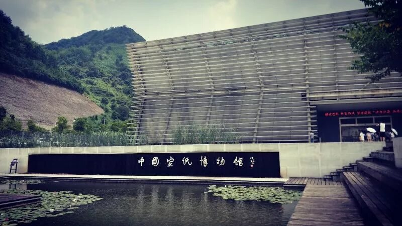
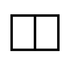

【素笺寄情·十三】纸短情长


纸短情长那年冬天，我有幸加入行者无疆，成为了其中一员。学长学姐们对我这个小学妹的照顾，使我感受到这个团队的温暖与爱。于是今年夏季，我决定留下来，继续我的文化苦旅，传承团队的温暖，与爱。
我从当初懵懵懂懂，什么事情都要请教学长学姐的小队员，如今变成了队长的帮手，和几名留下来的老队员一起商讨各项事宜。我们从早期的初步制定路线到发布招募信息到面试安排再到最后阶段的选人，每一个细节，我们丝毫都不敢马虎。终于，我们迎来了11名志同道合的小伙伴，组成了15人完整的团队。
我们做好分组，各自进行前期的工作准备。漫长的小学期终于结束，行者们踏上了拾遗皖徽的旅程。
（不要嫌我啰嗦嘛🌚）
纵使我没有丰厚的文字功底，我认为极为俭朴的语句更能通俗易懂地表达出我内心的感受。
初到安徽合肥，烈日暴晒，我很难想象在这样一种天气下，团队这么多人，该如何坚持下来。说来这南方的天气也真是怪，刚刚抵达宾馆稍作整顿后，去往第一个调研地点，天空就开始飘起了雨点。雨势逐渐变大，最后竟演变成了瓢泼大雨！大到即使雨刷在汽车挡风玻璃上疯狂的刮动，也刮不散那幕雨帘。
我们这次的调研主题是非遗。
第一站，我们来到了中国非物质文化遗产园。
在初定调研地点时，我发现了这个地方。据某某网页上的介绍，这里汇聚了中国各地的非物质文化遗产，是非常值得我们去调研有关非遗事项的地方。可到了那里，里面的一切让我失望。几乎所有展馆是因为我们的到来，才进行开放，而入内一看，到处都落满了灰尘。像是许久没有人来参观。本就空旷无人的非遗园，有了这雨水的陪衬，显得格外冷清。
第二站，安徽博物院。 我们在这里的调研任务进行的有些许曲折。在馆内发放调研问卷遭阻，与工作人员协商了好久，最终确定了我们是正规的实践团队来此地进行调研，才肯同意继续我们的工作。完成我的问卷任务后，我便仔细参观起了馆中文物。我应该是团队集合时最后一个到达的。因为我每一件文物都看得格外仔细，了解它们具体的用途，收获了不少。在参观期间，有许多游客从我身边经过。我发现他们大多都是走马观花，瞧一眼这件文物叫什么长什么样，那件怎么怎么样，之后仿佛了解了一般，“哦~”了一声就走过去看下一件文物。其实以前的我，也跟这些人一样，觉得博物馆枯燥无聊，随便转一圈就当参观好了。但自从加入了行者无疆，我明白我们要调研的是“文化”，而一座城市，最能展现出它文化底蕴的地方，是它的博物馆。我们来到这里并不只是发发问卷，草草看一眼文物就了事。我们要借此处丰富的资源，充实自己。安徽博物院的参观，我没有同任何伙伴一起。我似乎理解了上一期行者无疆某位成员的心情。她在每次参观博物馆时都要待上许久，甚至在实践结束之后竟要返回继续去参观那些因团队行程原因没法更多去了解的文物。自己一个人静下来无人打扰时，你会发现你所接收到的一条一条信息，是多么的震撼。于是，整个安徽博物院，我就是在这独自的震撼中走完的。
之后我们去到宣城泾县中国宣纸文化园，感受“大国工匠”独特的造纸艺术；去到黄山宏村，徽州古城等地进行采访调研，得到的旅人的反馈中，总有“现在的这些非遗景区，商业化太严重”的说法。而行者们对此也深有体会。我们想要采访一位在景区内摆摊挂牌为“非遗传承人”的人，竟然要我们买他的东西，不然不接收采访。这种现象在景区里甚是泛滥，到处都有挂牌说，自己是“非遗传承人”。打着“非遗”的旗号，为自己所谓的“非遗纪念品”做宣传。这不禁引发我们的思索。
此次调研，我加深了对了解某地文化这件事情的兴趣，我也愿意继续去探索那些逐渐被世人遗忘了的文化。即使做不到传承，去了解它，保护它，弘扬它。
行者，探寻文化的道路尚未停止。
如果可以，我们约定下一期继续好吗？
我还会在原地等你，
等待着与你的一场文化之旅的邂逅。
而你，
会如约而至吗？
图片｜沈华，盛暘
文案｜徐菁聪
排版｜邓子孚
审核｜应雨珊，潘雯雯
长按扫码关注我们